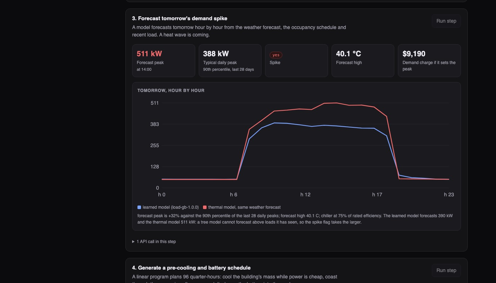
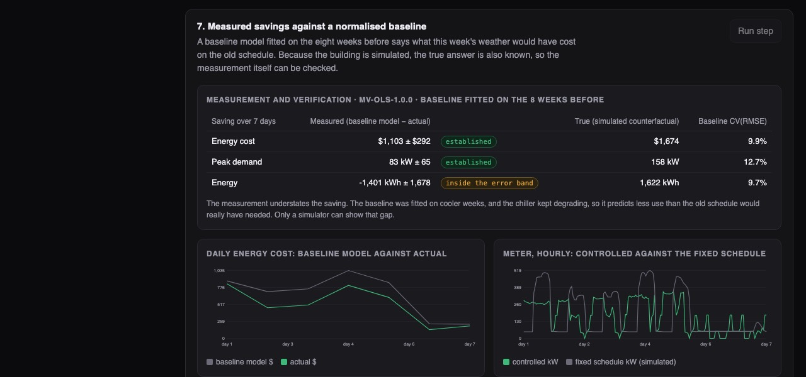

Python · IoT, forecasting and control · 2026-10
Can a Building Cut Its Power Bill Without Anyone Feeling Warmer?
An energy control system for office buildings: it reads sensor data, finds failing equipment, forecasts tomorrow's peak, plans cooling and battery use inside fixed comfort limits, acts only after a person approves, and then checks the saving. On a simulated building in a heat wave it cut a week's energy cost from $5,236 to $3,563 with no minute outside the comfort band.

Built from a written blueprint as one vertical slice. The buildings are simulated: 20 invented offices with a simple heat model, a chiller, a battery, an invented tariff and planted faults. Nothing here has controlled real equipment, and the demo week (hot weather, a worn chiller) is close to a best case for savings. There is no device connectivity, no time-series database, and only the demo week is stored minute by minute. Not built: Kafka, Terraform, single sign-on.
01 — The problem
Office buildings mostly run on fixed schedules: cool to 23 °C from 7 to 19, whatever the weather or the price of power. Electricity costs more in the late afternoon, and many bills add a charge for the single highest quarter-hour of the month. Meanwhile equipment quietly degrades and nobody notices until it fails. Can software spot the failing equipment, see tomorrow's peak coming, shift cooling to cheaper hours without letting anyone get uncomfortable, and then prove what it saved?
Blueprint 4 of ten in an enterprise build book, built as the demo scenario end to end.
02 — What I built
A Python service on PostgreSQL with a background worker and a web page, started by one docker compose up.
- A building simulator that stands in for real buildings: heat stored in the structure, heat leaking in from outside, a chiller that gets less efficient in hot weather, a battery, and four kinds of fault.
- Ingestion that tags every reading as fine, out of range or stuck, and ignores duplicates.
- Fault rules that compare what equipment does with what it should do, and price the difference.
- A forecast of tomorrow's load, cross-checked by the physical model.
- An optimizer that plans the next day in 96 quarter-hours, and a gate that refuses unsafe schedules and requires approval.
- Savings measurement against a weather-adjusted baseline, with an error band.
03 — How it was built
- 01
Compare the chiller with what it should be doing
A chiller's efficiency is cooling delivered divided by electricity used, and it naturally drops on hot days. So the rule does not look at efficiency alone: it divides measured efficiency by the efficiency expected at that hour's outdoor temperature. For the demo building that ratio slid from 100% to 77% over six weeks. The rule opened a fault after several days below 90% in a row and priced it: 353 kWh, about $56, wasted every day.
ratio = cooling_kw / chiller_kw / expected_cop(outdoor_temp) - 02
Two forecasts, because one cannot see a heat wave
A learned model forecasts tomorrow's load hour by hour, and beats "same hour last week" (6.2% error against 7.3%). But the day after the streamed week is a 40 °C day with a worn chiller, and the model forecast a 390 kW peak where the truth was near 511. Models built from decision trees cannot predict above what they have seen. The physical model the optimizer already uses is run on the same weather forecast as a cross-check, and the warning uses the larger number.
peak = float(max(pred.max(), physics.max())) - 03
Plan the day as one optimization
The plan is a linear program: for each quarter-hour choose cooling power and battery charge or discharge so the day's cost is lowest. The building's own mass is the trick. Cooling it a little more overnight, when power is cheap, stores "coolness" that lets the chiller ease off in the expensive afternoon. The plan knows the chiller is at 75% efficiency because the fault evidence says so.
cost[g] = rate * DT # energy at the time-of-use price cost[P] = DEMAND_CHARGE # plus the charge on a new peak - 04
Comfort is a hard limit, and a person approves
While people are in, the planned temperature must stay between 21.5 and 24.5 °C. That is a constraint, not a preference the optimizer can trade away. A request to widen the band to 27 °C is refused and the attempt is logged. A second, independent check tests every schedule before dispatch, and only an engineer role can approve it: an operator's attempt returns 403.
raise Problem(422, "outside_comfort_envelope", ...) - 05
Measure the saving, then measure the measurement
A real building cannot be run twice, so savings are estimated: fit a model of daily use on the weeks before, ask it what this week's weather would have used, subtract the actual. A simulator can run the week twice, so the estimate can be graded. It under-credited the cost saving by a third and got the sign of the energy saving wrong, inside its own error band. So the report shows the band and says when a saving is not established.
"established": bool(abs(s) > band)
04 — Results
One week of control on the demo building (hot week, worn chiller), against the fixed schedule in the same weather:
| Fixed | Planned | |
|---|---|---|
| Energy cost | $5,236 | $3,563 |
| Peak demand | 519 kW | 361 kW |
| Energy used | 30,238 kWh | 28,615 kWh |
| Minutes outside comfort band | n/a | 0 |
The measurement, graded. The baseline method credited $1,103 ± $292 of the true $1,674 cost saving, and 83 ± 65 kW of the true 158 kW peak cut. For energy it reported -1,401 ± 1,678 kWh when the truth was +1,622: inside its own error band, so flagged as not established. The baseline was fitted on cooler weeks while the chiller kept wearing, so it underestimates what the old schedule would have needed.

Fault detection across 20 buildings and a year, 19 planted faults: the rules found 14 with no false alarms. The 5 misses were on equipment that was not running during the fault (a chiller wearing out in winter leaves no trace until it is used). A simple "25% above the usual day" alarm found 10 and raised 74 false alarms.
Forecast: 6.2% hourly error and 8.6% on the daily peak, against 7.3% and 11.7% for "same hour last week".
Checks. 18 tests: the physics (a chiller at 70% efficiency uses 1/0.7 of the power), each fault rule on a hand-built case and silent on a healthy building, the optimizer inside every limit and cheaper in the simulator, the safety check refusing five kinds of bad schedule, the savings maths recovering a known 15% cut, and tenant isolation.
05 — What I'd do next
- Re-plan during the day as the weather and the building drift from the forecast.
- Fix the baseline: account for known faults and fit on a full season, so a contract paid on verified savings is fair.
- Real device connections and a store built for minute-level data.